Справочник по системному программированию · модуль 2 · лабораторная работа
ЛР 4
Дерево
процессов
Каждый процесс кто-то запустил, и система помнит кто. Монитор показывает это деревом: видно, откуда пошли терминал и браузер и что бывает, когда родитель завершается раньше.
- Пара
- 4, первая половина; перед главой 2.1
- Время
- 30–35 минут
- Программы
- Process Explorer, командная строка, PowerShellМониторинг системы, ТерминалСистемный монитор GNOME, терминал, pstree, браузер
- Сдать
report.mdи 7 снимков вscreenshots/в папкеlabs/04-process-treeрепозиторияsysprog-start
Суть за две минуты
Каждый процесс кем-то запущен: команду запускает оболочка терминала, программы рабочего стола — Проводник в Windows, launchd в macOS, gnome-shell в Linux. В записи процесса хранится номер того, кто его запустил, — PPID.
Если соединить каждого с родителем, получится дерево с общим предком наверху. Монитор рисует его по этим номерам.
Отличие от людей: родитель у процесса один, а списка детей в записи нет.
Процесс без живого родителя называют сиротой. Системы с ним поступают по-разному: macOS отдаёт его процессу 1, Linux — ближайшему приёмному родителю, Windows оставляет старый номер.
В работе:дерево в мониторе → терминал и его родители → свой дочерний процесс → родитель командой → процессы браузера → сирота → сирота в дереве.
§1Подготовка
Нужен монитор процессов из ЛР 1: Process Explorer из набора SysinternalsМониторинг системы из папки Программы → УтилитыСистемный монитор GNOME. Создайте в репозитории sysprog-start папку labs/04-process-tree: в шаблоне в ней уже лежат бланк report.md и папка screenshots/. Код в этой работе не пишется, все команды набираются в терминале.
Вверху шага — действие. Ниже — кадр экрана после действия; красные рамки отмечают места, о которых идёт речь, номера рамок повторяются в тексте. Под действием — «Зачем этот шаг». Под каждым кадром — «Что на кадре»: что это за окно и что в каждой рамке. Ниже — «Что это значит»: вывод шага. Строка «В отчёт» — что записать в report.md. Номера процессов у вас будут другими.
§2Родитель и дети
Процесс запускается другим процессом: оболочка терминала запускает набранную команду, а программы с рабочего стола — Проводник explorer.exelaunchdоболочка рабочего стола gnome-shell. Запустивший — родитель, запущенный — ребёнок. Ядро хранит в записи процесса номер родителя — PPID (parent process ID). Все процессы, соединённые с родителями, образуют дерево процессов.
Как и родословная из «Сути», дерево процессов показывает, кто от кого произошёл, но родитель у процесса один, а списка детей в записи нет: детей находят, просматривая записи всех процессов. Наверху дерева стоят процессы, которые создала сама система при загрузке:
| Windows | macOS | Linux | |
|---|---|---|---|
| Начало дерева | System Idle Process (0), System (4) | kernel_task (0), launchd (1) | systemd (1), kthreadd (2) |
| Кто запускает программы пользователя | explorer.exe | launchd | systemd сеанса пользователя, gnome-shell |
| Терминал | cmd.exe и его окно conhost.exe | Терминал → login → zsh | gnome-terminal-server → bash |
На схеме — одна ветка такого дерева: от процесса системы до команды, запущенной в терминале. Числа взяты с кадров шагов 2–4, у вас они будут другими.
Ветка дерева от системы до команды
PID 4684
explorer.exeПроводникPID 7912
cmd.exeкомандная строкаPID 1308
PING.EXEPPID 7912PID 1
launchdпервый процессPID 38262
ТерминалPID 38302
loginPID 38305
zshоболочкаPID 46701
sleepPPID 38305PID 1
systemdпервый процессPID 1696
systemdсеансPID 3530
gnome-terminal-serverPID 3843
bashоболочкаPID 7567
sleepPPID 3843Стрелка — «запустил». В записи каждого процесса хранится только номер родителя: у последнего процесса он подписан внизу. Бирюзовая карточка — процесс, запущенный вами.
Последние два шага — про сироту: процесс, чей родитель завершился раньше него. Что с ним делает система, на трёх системах разное.
§3Ход работы
-
Откройте дерево процессовЗапустите Process Explorer (
procexp64.exe, на компьютере с ARM —procexp64a.exe) и разверните окно. Дерево включено сразу: дочерние процессы стоят под родителем со сдвигом вправо. Если список плоский, включите View → Show Process Tree (Ctrl+T). Прокрутите список в самое начало.Откройте дерево процессовЗапустите Мониторинг системы и выберите в меню Вид → Все процессы, иерархически. Дочерние процессы встанут под родителем, у родителя появится стрелка, которая сворачивает ветку. Прокрутите список в самое начало.Откройте дерево процессовЗапустите Системный монитор. В меню ☰ (или F10) выберите All Processes, затем Show Dependencies (Ctrl+D). Разверните окно и прокрутите список в начало.Зачем этот шагВ ЛР 1 процессы шли списком. Дерево показывает больше: кто кого запустил и с чего всё началось.
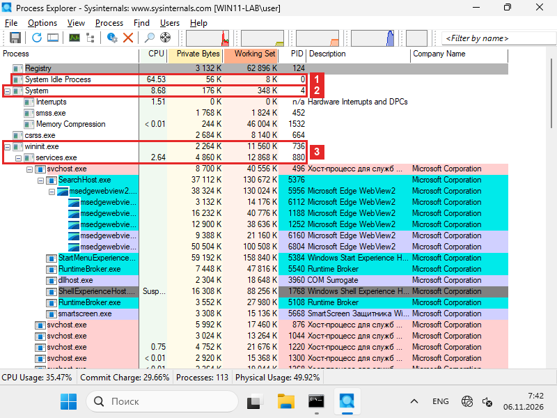
Что на кадреProcess Explorer, начало списка. Одна строка — один процесс. Столбец PID — номер процесса. Сдвиг вправо показывает, что процесс стоит под родителем.
- 1Строка
System Idle Process, PID 0, в столбце CPU — 64,53. Так Windows показывает время, когда процессор свободен. - 2Строка
System, PID 4: потоки ядра Windows. Под ней сдвинутыInterrupts,smss.exeиMemory Compression. - 3Строка
wininit.exe, PID 736, и под нейservices.exe, PID 880. Процессservices.exeзапускает службы: ниже со сдвигом вправо стоят строкиsvchost.exe.
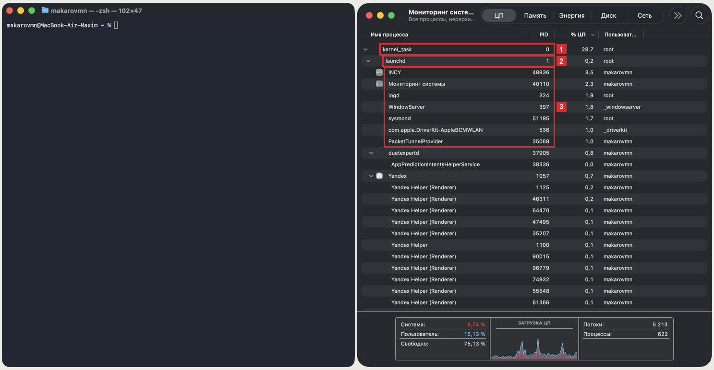
Что на кадреСлева Терминал, он понадобится в следующих шагах. Справа Мониторинг системы, вкладка «ЦП», вид «Все процессы, иерархически». Столбцы: имя процесса, PID — номер, «% ЦП» — загрузка процессора, пользователь. Дочерние процессы сдвинуты вправо под родителем.
- 1Строка
kernel_task, PID 0: само ядро macOS. - 2Строка
launchd, PID 1: первый процесс системы. - 3Программы и службы, которые запустил
launchd:WindowServer(397) рисует окна,logd(324) собирает журнал. Внутри одного уровня список отсортирован по столбцу «% ЦП».
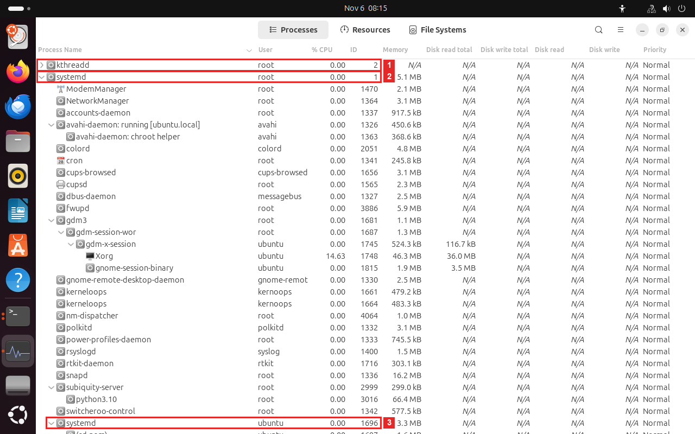
Что на кадреСистемный монитор GNOME, вкладка Processes, дерево включено. Столбцы: Process Name — имя, User — пользователь, % CPU — загрузка процессора, ID — номер процесса, Memory — память.
- 1Строка
kthreadd, ID 2: родитель потоков ядра Linux. Её ветка свёрнута. - 2Строка
systemd, ID 1: первый процесс системы. Под ней со сдвигом вправо стоят службы, напримерNetworkManagerиcron. - 3Ещё один
systemd, ID 1696, пользовательubuntu: менеджер вашего сеанса.
Что это значитВ Диспетчере задач в ЛР 1 процессы шли списком. В дереве видно, кто кого запустил:
services.exe— ребёнокwininit.exe, а всеsvchost.exeниже — детиservices.exe.Что это значитПочти всё в системе — дети
launchd: он запускает и службы, и программы, которые вы открываете из Dock или Launchpad.Что это значитВ плоском списке ЛР 1 процессы шли по алфавиту. В дереве видно, кто кого запустил: службы — дети
systemdс номером 1, а программы сеанса пользователя будут под вторымsystemd.В отчёт. имя и номер процесса в начале дерева.
Снимок в отчёт · 01 Сохраните окно как
screenshots/01_tree_root.png. На снимке должно быть видно: дерево процессов в мониторе: первые процессы системы и их номера. - 1Строка
-
Найдите терминал и его родителейОткройте командную строку через Win+R →
cmd. Вернитесь в Process Explorer, щёлкните по списку и наберите на клавиатуреcmd.exe: выделение перейдёт к процессу. Прокрутите так, чтобы были видны его родитель и дети.Найдите терминал и его родителейОткройте Терминал. В Мониторинге системы введите в поле поискаzsh: в иерархическом виде поиск оставляет найденные процессы вместе с их родителями. Если ветка свёрнута, щёлкните по стрелке у первой строки с нажатой Option.Найдите терминал и его родителейОткройте терминал (Ctrl+Alt+T). В Системном мониторе нажмите Ctrl+F и введитеbash: в виде дерева поиск оставляет найденные процессы вместе с их родителями.Зачем этот шагТерминал — самый знакомый процесс. Смотрим, откуда он взялся: цепочка его родителей покажет, как запускаются программы.
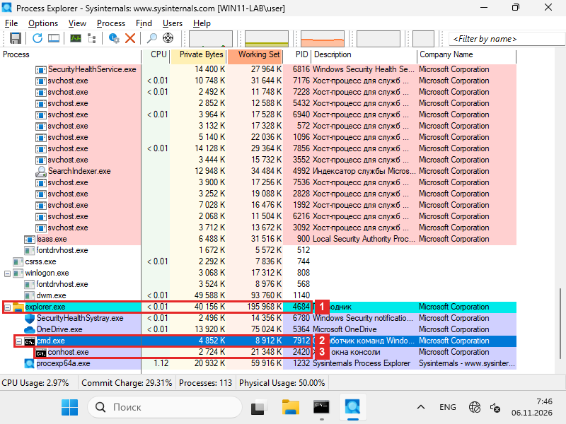
Что на кадреProcess Explorer, список прокручен к
explorer.exe. Синим выделена строкаcmd.exe, которую вы открыли.- 1Строка
explorer.exe, PID 4684, описание «Проводник». Она у левого края: родителя в дереве нет. Проводник запускает всё, что вы открываете с рабочего стола, из меню «Пуск» и через Win+R. - 2Строка
cmd.exe, PID 7912, под Проводником. - 3Строка
conhost.exe, PID 2420, подcmd.exe: окно консоли, в котором рисуется текст командной строки.
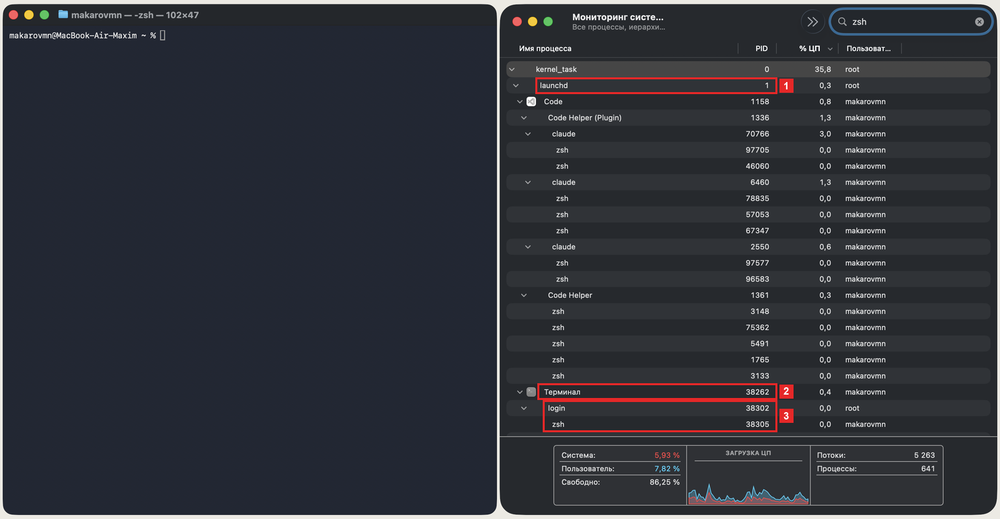
Что на кадреСлева Терминал, справа Мониторинг системы. В поле поиска набрано
zsh: остались найденные процессы вместе с родителями. Выше рамок видны другиеzsh: их запустили программы внутри VS Code.- 1Строка
launchd, PID 1. - 2Строка
Терминал, PID 38262, подlaunchd. - 3Строка
login(38302) и под нейzsh(38305). Терминал запускает для каждого окна программу входаlogin, а она — оболочку.
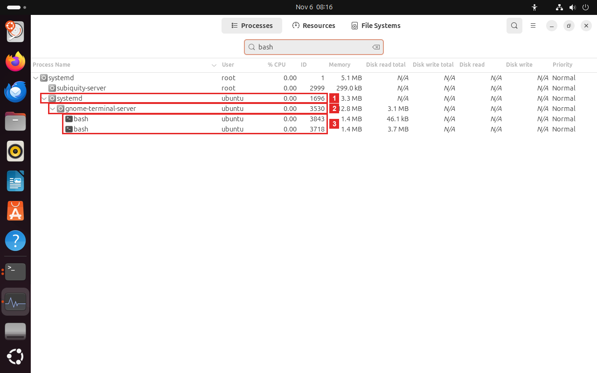
Что на кадреСистемный монитор, в поиске набрано
bash: остались найденные процессы вместе с родителями. Столбец ID — номер процесса. Выше рамок —systemdс номером 1.- 1Строка
systemd, ID 1696, пользовательubuntu: менеджер вашего сеанса. - 2Строка
gnome-terminal-server, ID 3530: одна программа терминала на все окна. - 3Два
bash, ID 3843 и 3718: по оболочке на каждое открытое окно терминала.
Что это значитУ
explorer.exeнет родителя в дереве: он стоит у левого края. Его запустил процесс входа в систему, который сразу завершился. Цепочка терминала короткая: Проводник → командная строка → её окно.Что это значитЦепочка терминала:
launchd→ Терминал →login→zsh. Вpsэта оболочка называется-zsh: минус означает оболочку входа, которая читает настройки пользователя.Что это значитЦепочка терминала:
systemd(1) →systemdсеанса (1696) →gnome-terminal-server→bash. Все окна терминала обслуживает один процессgnome-terminal-server, а оболочка у каждого окна своя.В отчёт. цепочку родителей терминала от оболочки вверх, с номерами.
Снимок в отчёт · 02 Сохраните окно как
screenshots/02_terminal_parents.png. На снимке должно быть видно: ветка дерева от процесса терминала вверх до процесса системы. - 1Строка
-
Запустите дочерний процессВ командной строке выполните
start /b ping -n 600 127.0.0.1 >nul. Командаping600 раз проверит связь с этим же компьютером, около 10 минут.start /bзапускает её в фоне, и командная строка остаётся свободной.>nulубирает выводping. В Process Explorer наберитеping.Запустите дочерний процессВ Терминале выполнитеsleep 600 &. Командаsleepждёт 600 секунд и ничего не делает, знак&запускает её в фоне: оболочка печатает номер задания и номер процесса. В Мониторинге системы найдитеsleep.Запустите дочерний процессПоставьте окна рядом: терминал справа, Системный монитор слева (Super+→ и Super+←). В терминале выполнитеsleep 600 &. Командаsleepждёт 600 секунд, знак&запускает её в фоне. В поиске монитора введитеsleepи раскройте ветку клавишей *.Зачем этот шагТеперь запускаем процесс сами. Так мы заранее знаем, кто его родитель, и можем проверить это по дереву.
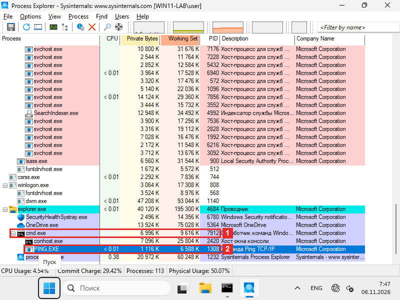
Что на кадреProcess Explorer, дерево прокручено до
explorer.exeи его ветки. Командаpingуже запущена.- 1Строка
cmd.exe, PID 7912: командная строка, из которой набрана команда. - 2Строка
PING.EXE, PID 1308, сдвинута подcmd.exe. Это процесс, который вы запустили.
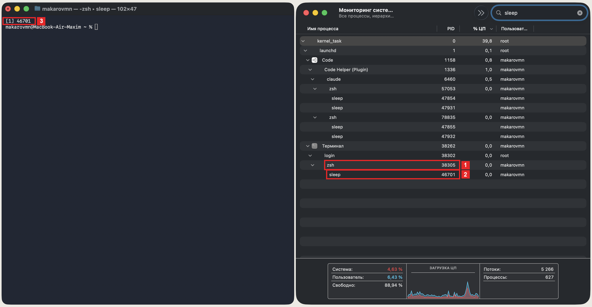
Что на кадреСлева Терминал после команды
sleep 600 &. Справа Мониторинг системы, в поиске набраноsleep.- 1Строка
zsh, PID 38305: оболочка в ветке Терминала. - 2Строка
sleep, PID 46701, на уровень нижеzsh: оболочка — его родитель. - 3В Терминале оболочка напечатала
[1] 46701: номер задания и номер процесса. Номер совпал с PIDsleepв мониторе.
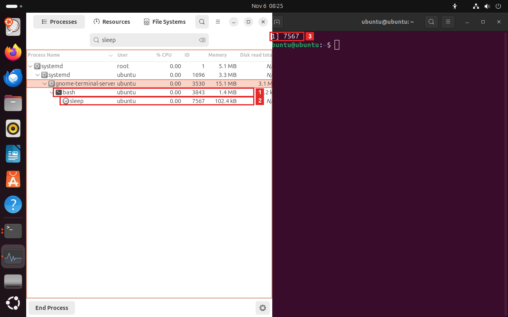
Что на кадреСлева Системный монитор, в поиске набрано
sleep. Справа терминал после командыsleep 600 &.- 1Строка
bash, ID 3843: оболочка в ветке терминала. - 2Строка
sleep, ID 7567, подbash: оболочка — его родитель. - 3В терминале оболочка напечатала
[1] 7567: номер задания и номер процесса. Начало строки закрыто окном монитора. Номер совпал с IDsleepв мониторе.
Что это значитУ командной строки появился второй ребёнок, кроме
conhost.exe: процесс, который вы запустили своей командой. Его родитель — та командная строка, в которой набрана команда.Что это значитОболочка стала родителем: в дереве появилась новая ветка на уровень ниже
zsh.Что это значитНомер в терминале и в мониторе совпал. Оболочка стала родителем: под
bashпоявилась новая ветка.В отчёт. номер запущенного процесса и номер его родителя по дереву.
Снимок в отчёт · 03 Сохраните окно как
screenshots/03_child.png. На снимке должно быть видно: запущенный из терминала процесс под оболочкой терминала. - 1Строка
-
Узнайте родителя командойВ командной строке выполните
powershell -NoProfile -Command "Get-CimInstance Win32_Process -Filter \"Name='PING.EXE'\" | Format-Table ProcessId,ParentProcessId,Name"Get-CimInstance Win32_Processвозвращает записи процессов,-Filterоставляет те, чьё имяPING.EXE,Format-Tableпечатает три поля таблицей.Узнайте родителя командойВыполнитеps -o pid,ppid,comm -p $!.$!— номер последнего процесса, запущенного в фоне,-o pid,ppid,commвыбирает столбцы: номер, номер родителя, имя. Затем выполнитеecho $$:$$— номер самой оболочки.Узнайте родителя командойВ терминале выполнитеecho $$,ps -o pid,ppid,comm -p 7567(ваш номерsleep) иpstree -l -s -p 7567.$$— номер самой оболочки.-o pid,ppid,commвыбирает столбцы: номер, номер родителя, имя.pstree -sпечатает всех предков процесса,-p— с номерами,-lне обрезает длинную строку.Зачем этот шагДерево — картинка монитора. Команда показывает номер родителя прямо из записи процесса, и видно, что дерево строится именно по нему.
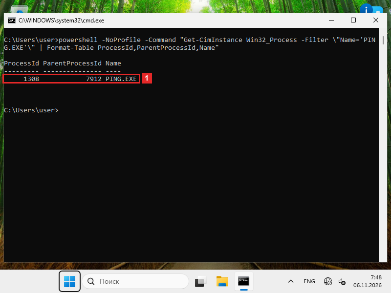
Что на кадреКомандная строка. Команда PowerShell вывела таблицу из трёх столбцов:
ProcessId— номер процесса,ParentProcessId— номер родителя,Name— имя.- 1Единственная строка таблицы:
ProcessId1308,ParentProcessId7912,PING.EXE. Номер родителя 7912 — это номерcmd.exeв дереве шага 3.
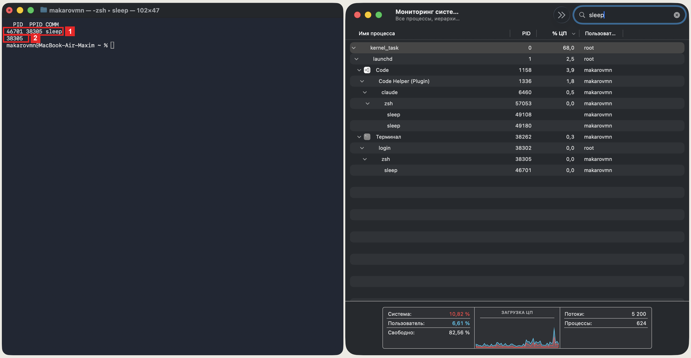
Что на кадреСлева Терминал: вывод
psиecho $$. Столбцыps: PID — номер процесса, PPID — номер родителя, COMM — имя. Справа Мониторинг системы, в поиске набраноsleep.- 1Строка
sleep: PID 46701, PPID 38305. Родитель — процесс 38305. - 2Число 38305 — вывод
echo $$, номер самой оболочки. Он совпал с PPID уsleep.
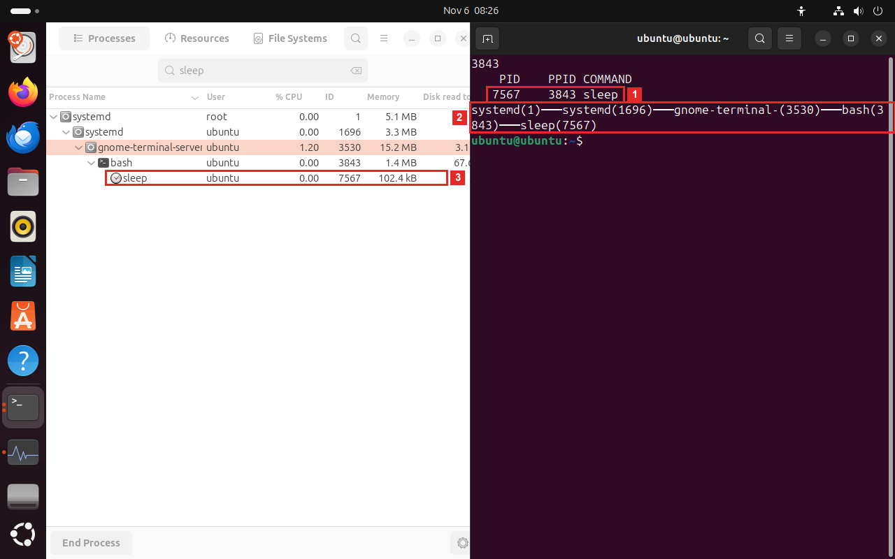
Что на кадреСправа терминал, слева Системный монитор с поиском
sleep. В первой строке терминала —3843: выводecho $$, номер оболочки. Столбцыps: PID — номер процесса, PPID — номер родителя, COMMAND — имя.- 1Вывод
ps: уsleepPID 7567, PPID 3843. Родитель — тот же номер, что напечаталecho $$. - 2Вывод
pstree:systemd(1)→systemd(1696)→gnome-terminal-(3530)→bash(3843)→sleep(7567). Это все предкиsleep, от первого процесса до него. Длинная строка перенесена, номер 3843 разорван. - 3Строка
sleep, ID 7567, в мониторе: та же ветка подbash.
Что это значитНомер родителя из команды совпал с номером
cmd.exeв дереве шага 3. Process Explorer строит дерево по тому же полю: у каждого процесса записан номер родителя.Что это значитНомер родителя из
psсовпал с оболочкой, под которойsleepстоит в дереве шага 3.Что это значитКоманда,
pstreeи монитор показали одну цепочку. Монитор строит дерево по полю PPID: у каждого процесса записан номер родителя, а список детей не хранится.В отчёт. вывод команды: номер процесса и номер родителя; совпал ли родитель с деревом.
Снимок в отчёт · 04 Сохраните окно как
screenshots/04_ppid_command.png. На снимке должно быть видно: вывод команды с номером процесса и номером его родителя. - 1Единственная строка таблицы:
-
Посмотрите процессы браузераОткройте браузер, которым пользуетесь, например Microsoft Edge, и две-три вкладки. В Process Explorer наберите имя его процесса, например
msedge.exe, и раскройте ветку.Посмотрите процессы браузераОткройте браузер, которым пользуетесь, и две-три вкладки. В поле поиска Мониторинга введите его название и посмотрите, что стоит под главным процессом.Посмотрите процессы браузераЗапустите Firefox через Alt+F2 →firefoxили с панели и поставьте его справа. В поиске монитора введитеfirefoxи раскройте ветку клавишей *.Зачем этот шагБраузер выглядит одной программой, а внутри у него целая ветка процессов. Это пример большого дерева из жизни.
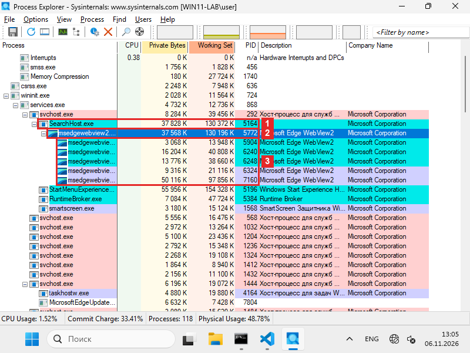
Что на кадреProcess Explorer, ветка панели поиска Windows. Браузера на кадрах Windows нет, поэтому показан его движок: Microsoft Edge WebView2, процессы
msedgewebview2.exe. Через него панель поиска показывает веб-страницы. У браузера Edge ветка подexplorer.exeустроена так же.- 1Строка
SearchHost.exe, PID 5164: панель поиска. - 2Главный процесс движка, PID 5772, под
SearchHost.exe. - 3Пять дочерних процессов с тем же именем: 5904, 6240, 6248, 6324, 7160.
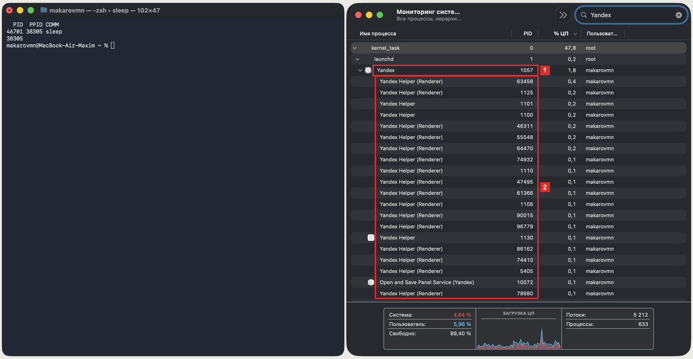
Что на кадреСлева Терминал, справа Мониторинг системы. В поиске набрано
Yandex. Столбец PID — номер процесса.- 1Строка
Yandex, PID 1057: главный процесс браузера подlaunchd. - 2Дети главного процесса:
Yandex Helper (Renderer)— процессы страниц,Yandex Helper— служебные процессы. В рамке около двадцати строк, список продолжается ниже.
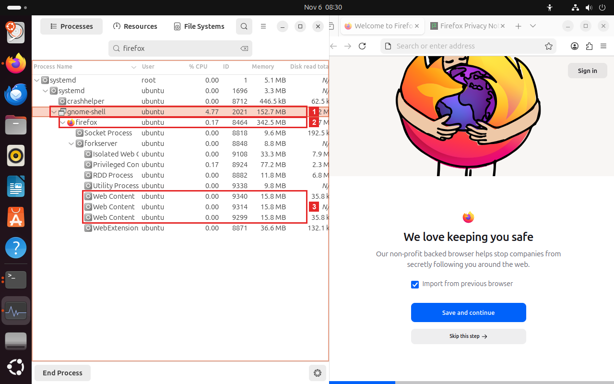
Что на кадреСлева Системный монитор, в поиске набрано
firefox. Справа окно Firefox. Столбец ID — номер процесса.- 1Строка
gnome-shell, ID 2021: оболочка рабочего стола запустила браузер по Alt+F2. - 2Строка
firefox, ID 8464: главный процесс браузера. - 3Три процесса
Web Content: 9340, 9314 и 9299. В них работают страницы вкладок. Они стоят под служебным процессомforkserver: через него Firefox их запускает.
Что это значитБраузер — дерево процессов: главный процесс запускает отдельный процесс на группу вкладок и на служебные задачи. Описание и командная строка процесса (двойной щелчок, вкладка Image) показывают, чем занят каждый.
Что это значитБраузер — дерево процессов: падение одной вкладки завершает её процесс, а остальные продолжают работать.
Что это значитFirefox — дерево процессов. Вкладки
Web Contentстоят под служебным процессомforkserver: через него Firefox их запускает. Падение одной вкладки завершает только её процесс.В отчёт. сколько дочерних процессов у браузера и как называется процесс вкладок.
Снимок в отчёт · 05 Сохраните окно как
screenshots/05_browser.png. На снимке должно быть видно: раскрытая ветка браузера с дочерними процессами. - 1Строка
-
Оставьте процесс без родителяВыполните
cmd /c "start /b ping -n 900 127.0.0.1 >nul". Вторая командная строкаcmd /cзапускаетpingв фоне и сразу завершается. Повторите команду PowerShell из шага 4. Затем проверьте, есть ли процесс-родитель:tasklist /fi "PID eq номер"с номером из столбцаParentProcessId.Оставьте процесс без родителяВыполнитеbash -c 'sleep 900 & echo child $!'. Вторая оболочкаbash -cзапускаетsleepв фоне, печатает его номер и сразу завершается. Затем выполнитеps -o pid,ppid,comm -p номерс напечатанным номером.Оставьте процесс без родителяВыполнитеbash -c 'sleep 900 & echo child $!'. Вторая оболочкаbash -cзапускаетsleepв фоне, печатает его номер и сразу завершается. Затем выполнитеps -o pid,ppid,comm -C sleep:-Cвыбирает процессы по имени.Зачем этот шагЧто будет, если родитель завершится раньше ребёнка? Проверяем: убираем родителя и смотрим, что запишет система в номер родителя.
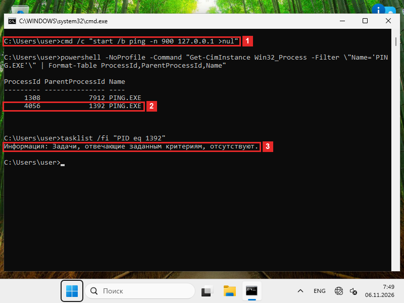
Что на кадреКомандная строка. Сверху команда
cmd /c, ниже команда PowerShell из шага 4, внизуtasklist. Столбцы таблицы те же:ProcessId,ParentProcessId,Name.- 1Команда
cmd /c "start /b ping -n 900 127.0.0.1 >nul": вторая командная строка запускаетpingв фоне и сразу завершается. - 2Строка нового
PING.EXE:ProcessId4056,ParentProcessId1392. У первогоping(1308) родитель по-прежнему 7912. - 3Ответ
tasklist /fi "PID eq 1392": «Информация: Задачи, отвечающие заданным критериям, отсутствуют». Процесса с номером 1392 уже нет.
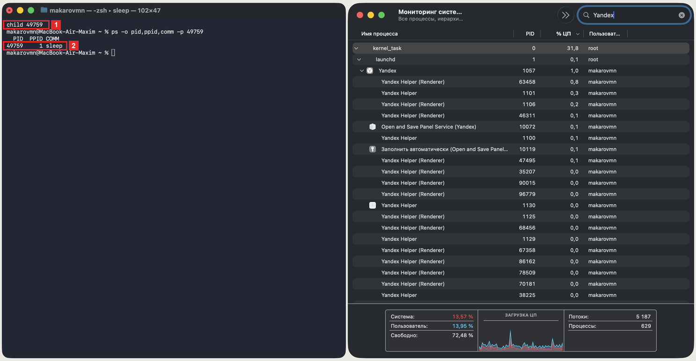
Что на кадреСлева Терминал: вывод команды шага 6 и команда
ps -o pid,ppid,comm -p 49759. Столбцыps: PID — номер процесса, PPID — номер родителя, COMM — имя. Справа Мониторинг системы, в поиске набраноYandex: для этого шага он не нужен.- 1Строка
child 49759: вторая оболочка напечатала номер новогоsleepи завершилась. - 2Вывод
ps: PID 49759, PPID 1,sleep. Родитель — процесс 1,launchd.
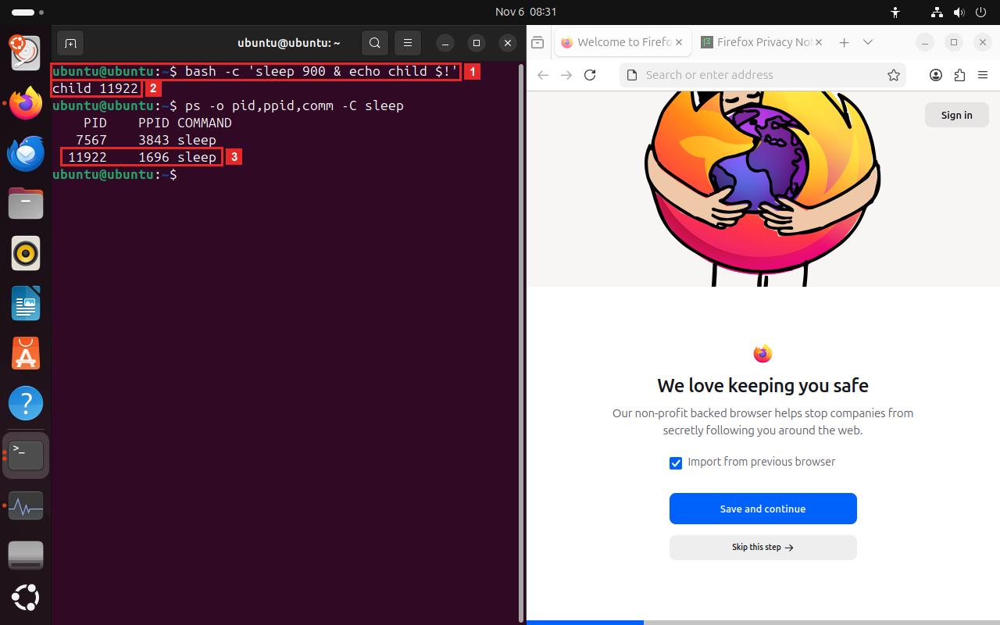
Что на кадреСлева терминал, справа окно Firefox. Столбцы
ps: PID — номер процесса, PPID — номер родителя, COMMAND — имя.- 1Команда
bash -c 'sleep 900 & echo child $!': вторая оболочка запускаетsleepв фоне, печатает его номер и завершается. - 2Строка
child 11922: номер новогоsleep. - 3Строка нового
sleepв выводеps: PID 11922, PPID 1696. У первогоsleep(7567) строкой выше родитель прежний, 3843.
Что это значитРодитель завершился, а номер родителя в записи процесса остался. Windows его не меняет. В записи хранится только число, и позже оно может достаться другому процессу.
Что это значитОболочка-родитель завершилась, и macOS отдала её ребёнка процессу 1. Такой процесс называют сиротой: его родитель завершился раньше него.
Что это значитОболочка-родитель завершилась, и ядро Linux передало её ребёнка процессу 1696 —
systemdсеанса. Такой процесс называют сиротой. Ядро отдаёт сироту ближайшему предку, который объявил себя приёмным родителем (так делаетsystemdсеанса). Если такого предка нет, сирота достаётся процессу 1.В отчёт. номер сироты и номер его родителя после того, как настоящий родитель завершился.
Снимок в отчёт · 06 Сохраните окно как
screenshots/06_orphan_command.png. На снимке должно быть видно: команда запуска и номер родителя у оставшегося процесса. - 1Команда
-
Найдите сироту в деревеВернитесь в Process Explorer и прокрутите список в самый конец (End).Найдите сироту в деревеВ поле поиска Мониторинга введите
sleep. Если ветка свернулась, щёлкните по стрелке у первой строки с нажатой клавишей Option: раскроется всё дерево.Найдите сироту в деревеВ поиске Системного монитора введитеsleepи раскройте ветку клавишей *.Зачем этот шагКоманда показала номер родителя сироты. Теперь смотрим, куда монитор поставит её в дереве, и сравниваем с командой.
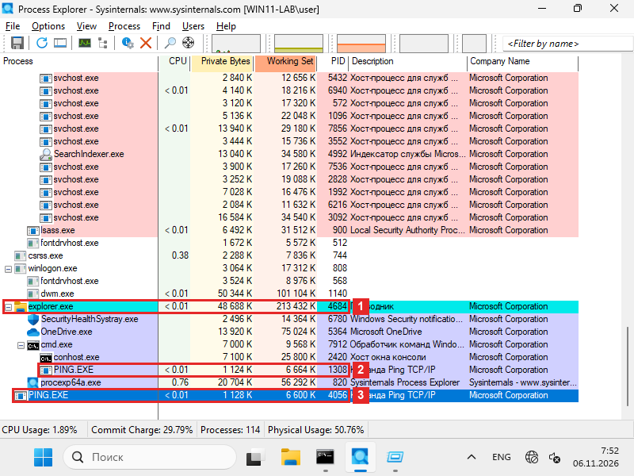
Что на кадреProcess Explorer, конец списка. Сдвиг вправо — процесс стоит под родителем. У левого края стоят процессы, чьего родителя нет в списке.
- 1Строка
explorer.exe, PID 4684, у левого края. - 2Первый
PING.EXE, PID 1308, на своём месте подcmd.exe. - 3Сирота
PING.EXE, PID 4056, тоже у левого края: его родителя в списке нет.
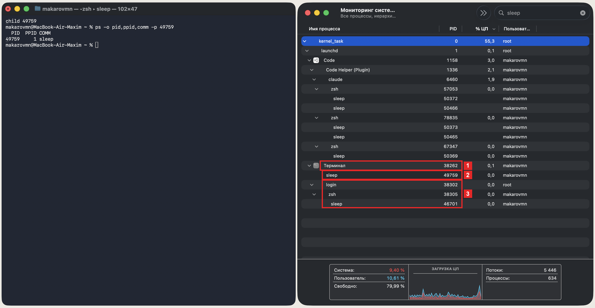
Что на кадреСлева Терминал с выводом шага 6. Справа Мониторинг системы, в поиске набрано
sleep. Столбец PID — номер процесса.- 1Строка
Терминал, PID 38262. - 2Сирота
sleep, PID 49759, прямо под Терминалом, хотяpsв шаге 6 показал PPID 1. - 3Первый
sleep, PID 46701, на прежнем месте:login→zsh→sleep.
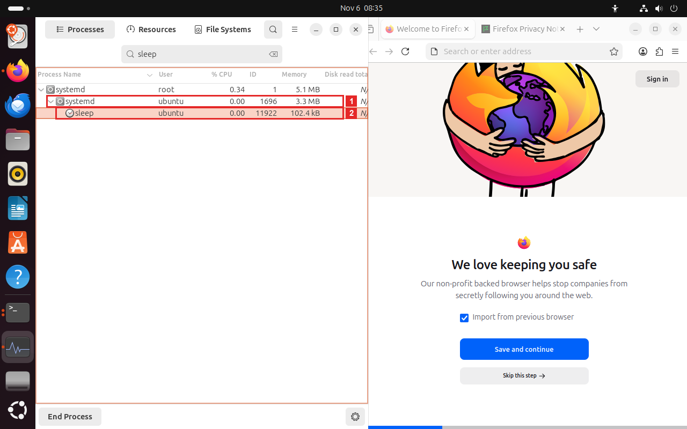
Что на кадреСлева Системный монитор, в поиске набрано
sleep. Справа окно Firefox. Первогоsleepв списке нет: 600 секунд прошли, и он завершился.- 1Строка
systemdсеанса, ID 1696. - 2Сирота
sleep, ID 11922, прямо под ним.
Что это значитProcess Explorer ставит к левому краю каждый процесс, чей родитель не найден в списке. Поэтому у края стоят и
explorer.exe, и сирота: оба пережили своих родителей.Что это значитДерево Мониторинга системы в иерархическом виде строится с учётом программы, которая отвечает за процесс. Сирота
sleepзапущен из Терминала, поэтому остался в его ветке. Что номер родителя сменился на 1, видно только в выводеps.Что это значитСирота переехал в дереве: раньше он был бы под
bash, теперь он ребёнокsystemdсеанса.В отчёт. где стоит сирота в дереве и почему именно там.
Снимок в отчёт · 07 Сохраните окно как
screenshots/07_orphan_tree.png. На снимке должно быть видно: тот же процесс в дереве монитора на новом месте. - 1Строка
§4Что получилось
| Windows | macOS | Linux | |
|---|---|---|---|
| Дерево в мониторе | Process Explorer, сразу | Вид → Все процессы, иерархически | ☰ → Show Dependencies |
| Родитель командой | Get-CimInstance Win32_Process, поле ParentProcessId | ps -o pid,ppid,comm; в Linux ещё pstree -s -p | |
| Родитель сироты | прежний номер, процесса с ним нет | launchd, PID 1 | systemd сеанса; без него — PID 1 |
| Сирота в дереве | у левого края | в ветке Терминала, хотя PPID = 1 | под systemd сеанса |
На схеме — что стало с сиротой в шагах 6–7 на каждой системе.
Что стало с сиротой
родитель
cmd /c, PID 1392запустил и завершилсясирота
PING.EXE 4056новый родитель
1392 — процесса нетродитель
bash -cзапустил и завершилсясирота
sleep 49759новый родитель
launchd, PID 1родитель
bash -cзапустил и завершилсясирота
sleep 11922новый родитель
systemd сеанса, PID 1696Windows номер родителя не меняет: в записи остаётся 1392, хотя такого процесса уже нет.macOS отдаёт сироту процессу 1. В дереве Мониторинга он остаётся в ветке Терминала.Linux отдаёт сироту ближайшему предку, который объявил себя приёмным родителем, — systemd сеанса.
- Монитор строит дерево по номеру родителя: детей он находит сам, просматривая весь список.
- Мониторинг системы в macOS держит процесс ещё и в ветке программы, которая за него отвечает, поэтому номер родителя там проверяют командой
ps. - Сирота: Windows оставляет прежний номер родителя, macOS отдаёт процессу 1, Linux — ближайшему приёмному родителю.
- В главе 2.1 мозг агента построит цепочку родителей из списка, который отдаст ядро.
§5Отчёт
Бланк — в labs/04-process-tree/report.md. Замените каждый пропуск ___ данными со своего экрана, снимки положите в screenshots/. Коммит — labs 04: дерево процессов, отчёт.
# ЛР 4. Дерево процессов Система: ___ ## Дерево Процесс в начале дерева и его номер: ___ Цепочка родителей терминала (имя и номер): ___ Дочерний процесс: номер ___, родитель ___ Команда, которой проверен родитель: ___ Процессов у браузера и имя процесса вкладок: ___ ## Сирота Номер сироты: ___ Номер родителя до и после завершения настоящего родителя: ___ Где сирота стоит в дереве: ___ Не получилось: ___ ## Снимки экрана       
Кроме чисел в отчёт кладутся 7 снимков экрана. В папке labs/04-process-tree/screenshots уже лежат заглушки с нужными именами, а в report.md — ссылки на них с подписями. Сделайте снимок окна после шага из таблицы и сохраните его поверх заглушки с тем же именем: подпись и ссылку менять не нужно, на GitHub отчёт сразу покажет ваш снимок. В каждом шаге такой снимок отмечен оранжевой строкой «Снимок в отчёт».
Как снять окно: Win+Shift+S → «Окно», затем сохранить из «Ножниц» как PNG⌘+⇧+4, затем Пробел и щелчок по окну — PNG появится на Рабочем столеPrtSc → «Окно», PNG сохраняется в папку «Изображения/Снимки экрана». Снимок — всё окно программы, без обрезки; имя файла — строго из таблицы.
| № | После шага | Файл | Что должно быть видно |
|---|---|---|---|
| 01 | 1 | 01_tree_root.png | дерево процессов в мониторе: первые процессы системы и их номера |
| 02 | 2 | 02_terminal_parents.png | ветка дерева от процесса терминала вверх до процесса системы |
| 03 | 3 | 03_child.png | запущенный из терминала процесс под оболочкой терминала |
| 04 | 4 | 04_ppid_command.png | вывод команды с номером процесса и номером его родителя |
| 05 | 5 | 05_browser.png | раскрытая ветка браузера с дочерними процессами |
| 06 | 6 | 06_orphan_command.png | команда запуска и номер родителя у оставшегося процесса |
| 07 | 7 | 07_orphan_tree.png | тот же процесс в дереве монитора на новом месте |
§6Проверьте себя
Пять вопросов с ответами
По какому полю монитор строит дерево?
У каждого процесса ядро хранит номер родителя — PPID. Монитор читает его у всех процессов и раскладывает их по родителям. Списка детей в записи процесса нет.
Почему родитель командной строки — Проводник, а родитель ping — командная строка?
Родитель — процесс, который вызвал функцию запуска. Окно Win+R — часть Проводника, поэтому cmd запустил Проводник. ping запустила командная строка, когда выполняла команду.
Почему у explorer.exe в дереве нет родителя?
Его запустил процесс входа в систему, который сразу завершился. Process Explorer не находит родителя по номеру и ставит процесс к левому краю.
Что такое сирота и что с ним делают macOS и Linux?
Сирота — процесс, родитель которого завершился. macOS отдаёт его процессу 1, launchd. Linux — ближайшему предку, который объявил себя приёмным родителем, например systemd сеанса, а если такого нет — процессу 1.
Почему в Windows по номеру родителя нельзя слепо идти вверх по дереву?
Windows оставляет у сироты прежний номер родителя. Процесса с этим номером может уже не быть. Или номер достался позже другому, более новому процессу.